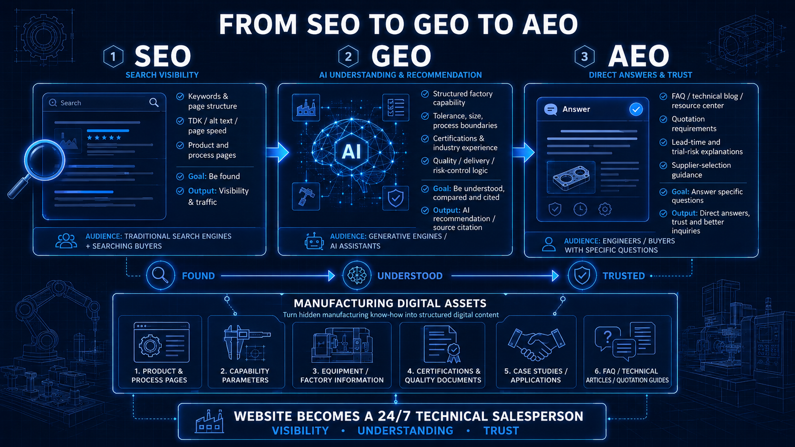

过去十几年，中国外贸型制造企业在探讨官网营销时，最常提及的一个词就是 SEO（搜索引擎优化）。在传统的思维里，做好 SEO 就意味着产品页面能够被 Google 收录，关键词排名靠前，从而带来稳定的曝光和询盘。
但在生成式 AI（Generative AI）席卷全球搜索形态的今天，海外采购商和工程师的搜索行为正在发生剧变。他们可能不再仅仅依靠 Google 输入关键词慢慢筛选网页，而是会打开 ChatGPT、Perplexity、Gemini 或 Bing Copilot，直接提问：“哪类工艺适合这个高精度铝合金项目？”或“推荐几家有医疗器械注塑经验的中国工厂”。
在这种背景下，仅仅“被搜到”已经远远不够，企业还需要做到“被理解、被引用、被推荐”。这就是为什么除了传统 SEO，我们现在必须了解 GEO 和 AEO。
1. SEO：解决“被找到”的可见性问题
SEO (Search Engine Optimization) 解决的是在传统搜索引擎（如 Google、Bing）里的可见性问题。其核心逻辑是基于用户搜索的“关键词（Keywords）”与网页内容的相关性进行匹配排序。
对于制造业企业来说，标准且扎实的 SEO 仍然是数字基建的底盘。它包括：
- 清晰的产品与工艺关键词：不仅要布局“CNC Machining”，还要深挖“5-Axis CNC Machining for Aerospace”。
- 结构化的页面体系：工艺能力页面、行业应用页面、设备清单、案例展示等。
- 底层技术指标：图片 alt 标签信息、页面 TDK（标题与描述）、移动端适配以及网站加载速度。
SEO 依然非常重要，因为传统搜索依旧是客户发现新供应商、验证供应商官方身份的重要入口。但它有一个局限：它只能把客户带到你的门前，无法自动回答客户脑子里的复杂疑问。
2. GEO：解决“被理解与被推荐”的逻辑问题
GEO (Generative Engine Optimization) 解决的是 AI 生成式搜索是否能理解、提取、交叉比对并引用企业信息的问题。
当客户用 AI 工具搜索“寻找具备 IATF 16949 认证且能做双色注塑的汽车零部件供应商”时，AI 不是在抓取简单的关键词，而是在阅读、理解并总结全网的数据。对于制造业官网来说，GEO 的重点绝不是在页面底部盲目堆砌关键词，而是要把企业能力写得足够清楚、结构化、具备逻辑说服力。
如果你想被 AI 推荐，你的网站必须清晰呈现以下信息：
- 你能做什么工艺（边界在哪）：公差能做到多少？最大加工尺寸是多少？
- 你适合哪些行业：是否有过真实的医疗、汽车或航空航天项目经验？
- 你的交付与风险管控逻辑：你的质检流程如何？遇到模具试模失败时如何调整？
- 你的差异化价值：与同行的普通供应商相比，你们强在工程沟通还是交期响应？
记住，AI 就像一个不知疲倦的采购助理，它在帮你客户“做背调”。如果你的官网内容模糊、只有空洞的口号和几张没有解释的设备照片，AI 就无法正确理解你的能力，更不会把你写入最终的推荐报告中。

3. AEO：解决“被采信”的答案直出问题
AEO (Answer Engine Optimization) 解决的是当客户提出非常具体的技术或业务问题时，你的网站内容能否直接作为权威答案被展现（例如 Google 的 Featured Snippets 或 AI 的直接回答）。
制造业的复杂项目采购往往伴随着极高的试错风险。工程师在决策前，通常会有大量具体疑问：
- How to choose a stamping die supplier for progressive dies?（如何选择连续模具供应商？）
- What strictly affects tooling lead time?（哪些因素会严重影响模具交期？）
- What exact information is needed for a plastic injection quotation?（注塑报价究竟需要哪些信息？）
- Why does mold trial usually take several rounds?（为什么试模通常需要几轮才能搞定？）
AEO 的重点不是一直对客户喊“We are professional”，而是直接、坦诚地回答客户在业务推进中真正关心的问题。通过在网站中建立高质量的 FAQ（常见问题解答）、技术博客或资源中心，你的企业将被定位为行业的“问题解决专家”，从而在客户发询盘前就建立起深厚的信任。
4. 三者的核心区别与联系
为了更直观地理解，我们可以通过下表对比这三种优化逻辑在制造业外贸语境下的差异：
| 优化类型 | 核心目标 | 面对的对象 | 典型优化内容 |
|---|---|---|---|
| SEO (传统搜索优化) | 获得页面曝光与流量 | 搜索引擎蜘蛛 (Spider) + 搜索关键词的人 | 产品关键词、TDK 设置、网站架构、工艺分类页面、加载速度 |
| GEO (生成式引擎优化) | 被理解、比对并作为优质信源引用 | AI 大模型 (如 ChatGPT, Perplexity) | 结构化的工厂能力、明确的工程参数、权威认证、真实的行业应用逻辑 |
| AEO (答案引擎优化) | 直接回答疑问，建立专家级信任 | 带着具体痛点或风险顾虑的工程师/采购 | 结构化的高频 FAQ、项目避坑指南、报价要求说明、风险管控文档 |
5. 对中小制造企业官网的实际意义
很多中小制造企业没有庞大的品牌预算，也没有遍布全球的大型销售团队。因此，官网绝不能仅仅是一个名片式的“形象展示板”，而应该被打造成一个 24 小时不知疲倦的技术销售员。
无论是迎合 SEO、GEO 还是 AEO，最终落地的动作都指向了一处：将企业的隐性制造经验，转化为显性的、结构化的数字内容。
你的官网需要清晰地向客户（和 AI）解释：我们工厂的真实能力边界在哪？一个完整的项目从打样到量产流程是怎样的？我们在哪些节点做品质控制？那些昂贵的检测设备到底为客户提供了什么保障？我们的历史案例解决了什么难题？
6. 结论
在新的搜索格局下，未来制造业网站的竞争，早已不再是比拼谁的页面做得更炫酷，或者谁堆叠了更多无意义的关键词。
核心竞争力在于：谁能把极其复杂的制造能力与工程经验，转化为采购商、工程师以及 AI 引擎都能轻松理解、准确抓取的清晰信息。
SEO 是不被淘汰的基础门票，GEO 是接入 AI 时代的新入口，而 AEO 则是真正促成高价值订单的信任催化剂。将这三者融入你的网站内容体系中，才是中小制造企业在数字时代获得高质量询盘的正确解法。